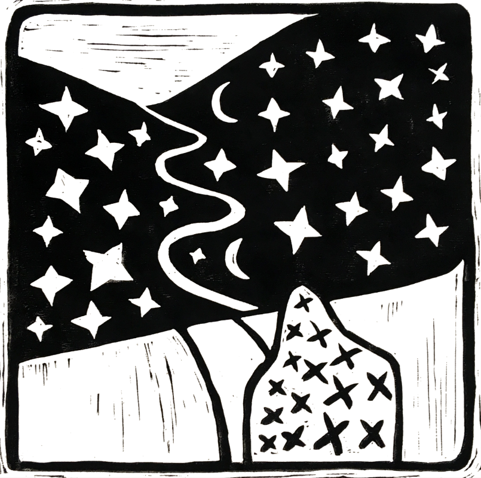

"Land of Dreams" - Linocut print 30cm x 30cm
I have been making Linocut prints for a few years now. I enjoy the production of multiples and seeing how an idea shifts as it is multiplied. The strength and the weakness of a design is amplified at this point, and you can really tell then how good a design is once printed.